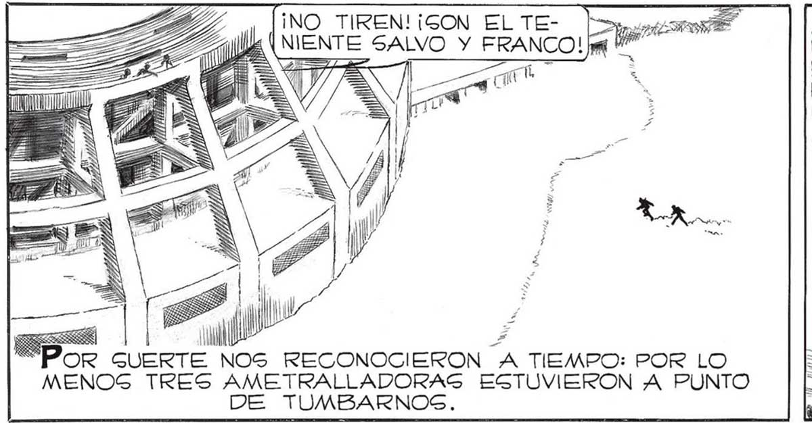
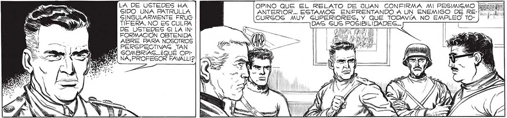
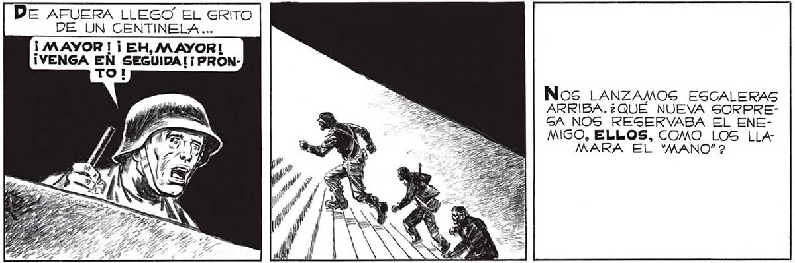

¡NO TIREN! ¡GON EL TE- inci ¿ARE NIENTE SALVO Y FRANCO! li Y" A Y ¿ SI 0 ; alo Á LS E ld Z POR GUERTE NOS RECONOCIERON A TIEMPO: POR LO MENOS TRES AMETRALLADORAS EGTUVIERON A PUNTO DE TUMBARNOG. FS LA DE USTEDES HA SIDO UNA PATRULLA SINGULARMENTE FRUG TÍFERA. NO ES CULPA DE USTEDES Sl LA INFORMACIÓN OBTENIDA ABRE PARA NOSOTROS PERSPECTIVAS TAN EY SOMBRIAS...¿QUÉ OP! 4 | NA, PROFESOR FAVALLI2 NO GE PRE-| 177 OCUPE POR EGO, TENIENTE SALVO... MOMENTOS DESPUÉS, EN UNA DE LAS OFICINAS DEL ESTADIO, FRANCO Y YO INFORMABAMOS A MI AMIGO FAVALLI, AL MAYOR Y AL CAPITAN, EL RESULTADO DE NUESTRA PATRULLA DE E XPLORACION. ANTES DE QUE CONCLUYÉRAMOS YA EL MAYOR HABIA PASADO UNA ORDEN PARA QUE TODO EL ESTADIO SE QUITARA LOG TRAJES AIGLANTES. EGO ES TODO, SEÑORES. HUBIERAMOS PREFERIDO TRAER CAUTIVO ALGUN “MANO”, PERO FUE IMPOGIBLE. NI CREO QUE NUNCA SE PUEDA CAPTURAR ALGUNO: EL MIEDO LOS MATARA. OPINO QUE EL RELATO DE JUAN CONFIRMA MI PESIMISMO | ANTERIOR... ESTAMOG ENFRENTANDO A UN ENEMIGO DE RECURGOGS MUY GUPERIORES, Y QUE TODAVIA NO EMPLEO TODAG 5U5 POSIBILIDADES... Y POR EJEMPLO. ¿COMO SERAN ESOS GURBOS, EGAG FIERAS QUE EL ENEMIGO NO LAÁNZO TODAVIA CONTRA NOSOTROS? TO! LA PREGUNTA DE FAVALL| QUEDO ENF EL AIRE... Lo ¡ MAYOR | ¡ EH, MAYOR! ¡VENGA EN SEGUIDA! ¡PRONNos LANZAMOS ESCALERAS ARRIBA.¿QUEÉ NUEVA SORPREGA NOS RESGERVABA EL ENEMIGO, ELLOS, COMO LOS LLAMARA EL "MANO” ?


